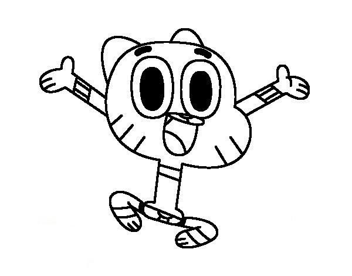

Inicio
Cartoon Network es un canal de televisión por suscripción latinoamericano de origen estadounidense, variante regional del canal original, propiedad de Warner Bros. Discovery y operado por la compañía WarnerMedia Latin America para toda la región de América Latina. Se divide en cinco señales de transmisión masivos, todas procedentes de sus oficinas centrales en Atlanta, EUA. Fue lanzada al aire el 30 de abril de 1993. Fuera de América Latina, la oficina de transmisión de América Latina es miembro asociado de la Caribbean Cable Cooperative.
Shows en emisión
 |
 |
 |
| Hora de Aventura |
Steven Universe |
ElIncreibleMundodeGumball |